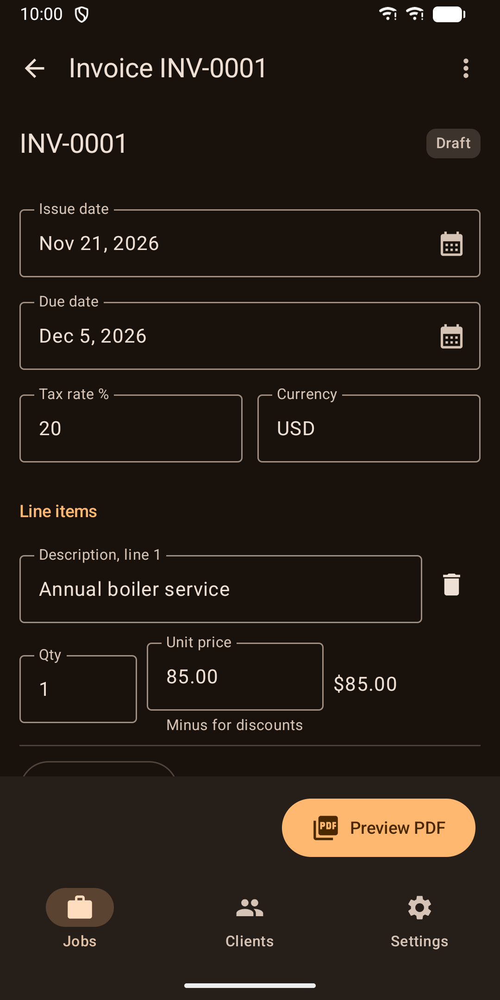

Field Forms: Partes de obra
Partes de trabajo, listas, presupuestos y facturas con fotos y firmas en PDF





Acerca de la app
Field Forms es la app de papeleo para autónomos y pequeños equipos del oficio: electricistas, fontaneros, técnicos de calefacción y albañiles. Rellena los formularios del trabajo, haz fotos, consigue la firma del cliente y envía un PDF limpio desde el móvil. Funciona sin cobertura y sin cuenta. TRABAJOS Y FORMULARIOS - Trabajos con cliente, dirección de la obra y todos los documentos y fotos que necesites - Partes de trabajo, informes de servicio y listas de inspección (correcto, fallo o no aplica, más tus propios puntos) - Un trabajo puede tener varios formularios del mismo tipo - Marca un trabajo como terminado para archivarlo. La búsqueda encuentra título, cliente, dirección y número de documento. PRESUPUESTOS Y FACTURAS - Líneas con cantidad y precio unitario, tipo de impuesto y totales - Descuentos y anticipos como líneas negativas - Numeración automática como QUO-0001 e INV-0001, con los prefijos que elijas - Un presupuesto firmado por el cliente se marca como aceptado y se convierte en factura con un toque - Fecha de vencimiento, seguimiento de pagado o pendiente y aviso de factura vencida FOTOS Y FIRMAS - Añade fotos desde la app de cámara o la galería, con pie de foto - Las fotos se reducen de tamaño y se eliminan la ubicación y los datos de la cámara - El cliente firma en la pantalla - Guarda tu firma una vez y reutilízala PDF Y ENVÍO - Nombre, dirección, teléfono, correo y número fiscal de tu negocio en cada documento - Fotos con pie y hora en partes de trabajo, informes y listas de inspección - Tamaño de página A4 o Letter - Envía por correo, WhatsApp o SMS desde el menú de compartir. El correo del cliente se rellena solo. - Los documentos firmados o enviados pasan a solo lectura. Duplícalos para modificarlos. CLIENTES - Lista de clientes reutilizable con accesos directos para llamar, escribir y abrir el mapa - Borra un cliente con todos sus trabajos, documentos y fotos en un solo paso PRIVACIDAD Y COPIA DE SEGURIDAD - Sin cuenta, sin servidor y sin analíticas. Tus datos se quedan en tu móvil. - Bloqueo opcional con PIN o huella - Exporta una copia de seguridad a Archivos o Google Drive, con protección opcional por contraseña AES-256, y restáurala más adelante WIDGET DE PANTALLA DE INICIO Muestra el total de facturas pendientes y vencidas y un botón para empezar un trabajo nuevo. Con el bloqueo de la app activado, los importes se ocultan. MÓVILES Y TABLETS Botones grandes para usar en la obra. En una tablet, la lista de trabajos y el detalle aparecen lado a lado. Los temas claro y oscuro siguen el ajuste del móvil. La app está en inglés. MEJORA PRO Todas las funciones se pueden usar sin pagar, salvo dos. Los PDF sin Pro llevan una pequeña marca de agua, y añadir tu logotipo a los PDF requiere Pro. Pro es una compra única dentro de la app a través de Google Play y se puede restaurar con la misma cuenta de Google. Los formularios son registros de trabajo de uso general. No son formularios certificados, como los certificados de seguridad de gas o los informes de instalaciones eléctricas.